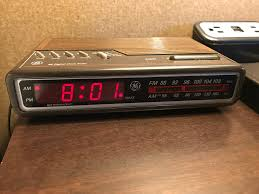
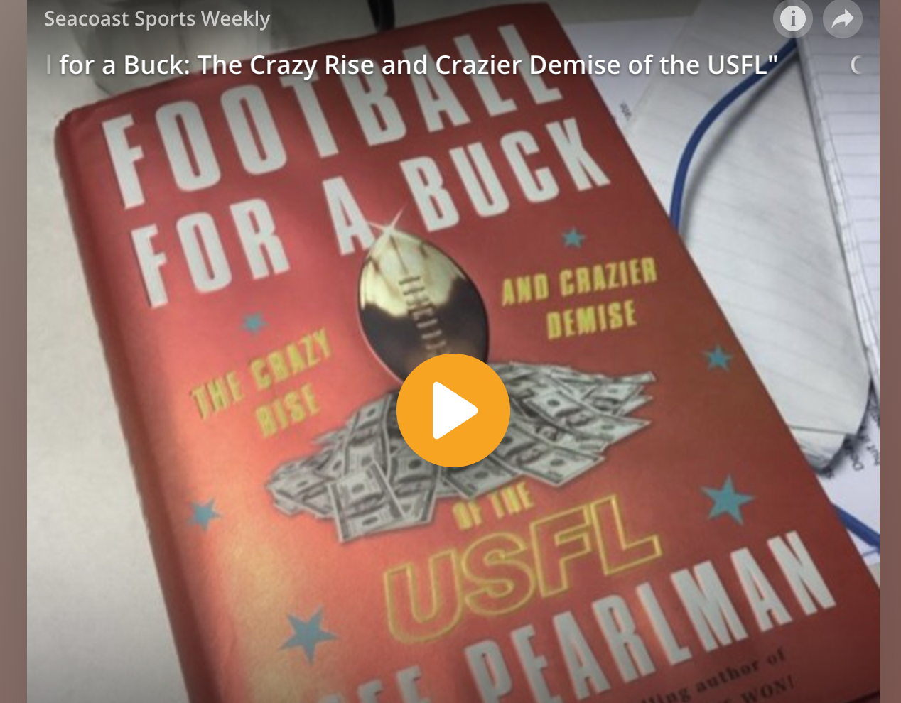

John Doyle
Bio/Media projects

BIO
After a 15-year career in journalism as a sports writer, photographer, news reporter, editor and radio host, John Doyle ("J.D.") is now a full-stack web developer after earning certification through the UNH Coding Bootcamp in 2019. J.D. graduated from the University of New Mexico with a creative writing degree and political science minor. He lives in New Hampshire with his wife Marisol and sons Michael and Tristan.
Cameraderie Is The Bullseye At This Darts Tourney
Radio story for New Hampshire Public Radio
Screaming fans were nowhere to be found at the 27th Annual Seacoast Open. But talk to throwers like Jeff Smith, who drove six hours from New Brunswick, and it seems like there’s no place they’d rather be.
Radio days, fondly remembered
Essay for Foster's Daily Democrat
That clock radio was nothing more than a circuit board, a receiver, a few wires and a couple of crude blinking lights. But in my pre-teen years, it was my window to the world of professional sports.
Interview with Jeff Pearlman, author of 'Football for a Buck'
'Seacoast Sports Weekly' podcast episode
The USFL drew millions of fans and launched the careers of legends. But then it died beneath the weight of a particularly egotistical and bombastic owner — a New York businessman named Donald Trump.